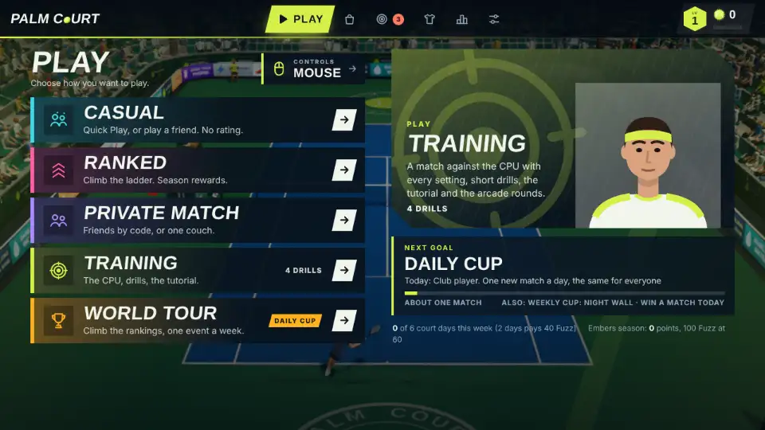

Online play lives on the Play tab, in three of its five lists: Casual (Quick Play and Play a friend), Ranked (the rated ladder, covered in the ranked seasons guide) and Private Match (Invite friends, Join with a code, and Couch Play). Every one works with any way to swing: mouse, phone, camera or controller.

Play a friend: the link match
This is the simplest way to play someone you know and it needs no sign-in.
- Choose Play, Casual, Play a friend, then Create a match link.
- Send your friend the link, or just the five-character code. Codes use letters and digits that cannot be confused (no 0, O, 1, I, L, S or 5) and are forgiving to type: any case, with spaces or hyphens, or paste the whole link.
- When they join, press Start match. The host’s surface and match length are used.
The two browsers connect directly to each other, with a free public service doing only the introduction. After that each player’s swings are judged on their own machine, so your timing never waits for the network. Whoever the ball is travelling towards makes the line call and sends the score. After the match, Rematch asks the other player; they can accept, decline or ignore it, and it expires after 20 seconds.
Quick Play: a stranger near your level
Play, Casual, Quick Play pairs you with someone else who is searching. It never changes a rating. You need a display name first (the same name filter as the leaderboards applies). The search starts by looking for opponents within about 300 rating points and widens quickly; it gives up after two minutes and offers alternatives. When a match is found you have 20 seconds to press Accept, and if the other player does not, you simply go back to searching. The same two players are not paired again within 90 seconds. The server chooses the surface at random and the set is always short.
Private matches: parties and codes
Private Match, Invite friends opens a party of up to four people in one room, shared by link or five-character code. People set their names and press ready. The leader picks the surface and length and starts a match between two ready members; the others wait their turn, and the winner stays on. Join with a code takes a party’s code or a friend link’s. If a person goes quiet for 30 seconds, the room drops them and passes the lead on.
What is shared, and what is not
- Looks and names. Your display name goes to the other player, and so does your created look (see create-a-player), which is cosmetic and never touches a stat. Strangers see your name and rank, never your account number.
- Your network address. A direct connection means the other player’s browser can see your IP address, which can reveal an approximate location. Only play friends you trust, and read the privacy policy for the details. Children under 13 should not set a leaderboard name or play online.
- Gear. Online matches ignore your gear by default (Settings, Gameplay, Gear stats online is off), so nobody’s grind decides a match.
- No camera or microphone. The link carries swings, ball positions, scores and settings only.
The ping badge and a wobbly connection
A small badge in the bottom-left corner shows your ping: green under 90 ms, amber under 180 and red above, and “relay” when the route goes through a relay server. If the link drops in the middle of a match, both games keep the match and the players, show “Reconnecting to…”, and dial again for 30 seconds with growing pauses. Shots, calls and scores sent meanwhile wait and arrive once, in order. A friend who closes the tab is noticed at once. Opening the pause menu does not stop an online match (it says the match is still running), and leaving counts as a loss in a rated game.
When two browsers will not connect
Most home connections link directly. Mobile data and many school, office and hotel networks are stricter, and then the browsers can only reach each other through a relay, which is slower and best-effort. If the lobby says it cannot connect after about 20 seconds, try these in order:
- Reload both pages and make a fresh link. If the lobby says the two copies are different versions, reload the older one.
- Change network on one side: from mobile data to Wi-Fi, or the other way round, or use a phone’s hotspot.
- Close VPNs and anything that filters connections.
- Try again later, or from other networks. The relay the game falls back on is shared and best-effort, so a strict network on both sides can fail at busy times. Quick Play and parties use the same kind of direct link once a match is found, so they have the same limits.
If the game says it cannot reach the online service at all, that affects Quick Play, ranked and parties; the friend link keeps working on its own.
The performance guide covers the other kind of lag, a game drawing too slowly.
Before you press start
- Decide who hosts. In a friend match the host’s surface and length are used, so the host should choose them in Settings before creating the link.
- Set up your swing first. A camera or phone needs its check done before the match, not during it. The camera guide and the phone guide cover it.
- Quiet the network. Pause large downloads and streaming on your connection; a steady link matters more than a fast one.
- In the same room? Use couch play instead: no network at all.
Fair play and leaving
Both players report the result at the end, and the server compares them. If a player quits, they lose at once and are recorded as having left early. After a second early leave within 24 hours there is a five-minute wait before the next Quick Play or ranked search, after a third 15 minutes, and after the fourth an hour. Parties and friend links are never affected. In a rated match, a link that dies at an even score is void, and if one player was ahead, they win. Reports of a win that arrive faster than games can be played are ignored.
The game is honest about what this cannot stop: two players who agree to cheat look like a normal match, and since each player’s swings are judged on their own machine, a modified game could play unfairly. That is why the rewards for rated play are cosmetic and small, and why the per-pair and hourly limits exist.